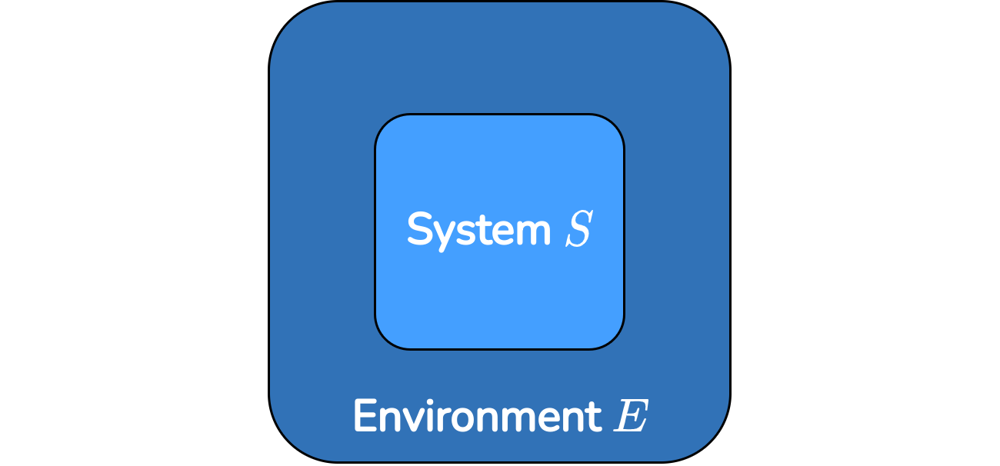
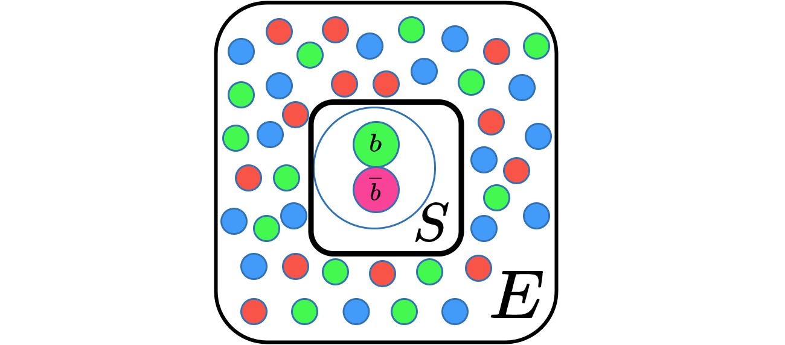
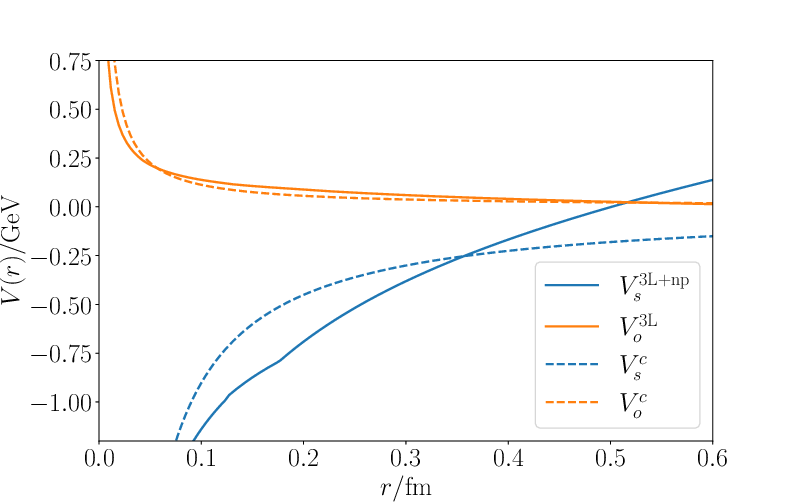
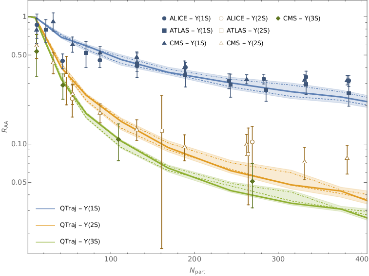

We recently put out a paper on bottomonium suppression in the quark gluon plasma 2403.15545. This is a project I’ve been working on for some time now and I want to show real quick what we have been doing.
Quarkonium suppression
Heavy ion collisions are experiments where two heavy nuclei are collided. Such experiments are conducted e.g. at CERN. In these collisions a state of matter called the quark gluon plasma is created. The quark gluon plasma is a hot liquid like state of matter, where light quarks, the fundamental building blocks of matter do bind to composite particles. Such a condition is assumed to have existed in the early universe shortly after the big bang, where matter was condensed to a tight space.
The quark gluon plasma (QGP) only exists for a short amount of time. It quickly cools down and hadronizes, dissolving into bound hadrons. It is therefore hard to access the QGP experimentally as it cant be detected.
A possible probe was famously proposed by Matui and Satz. The idea is to use heavy quarkonium as a test particle. Heavy quarkonium like charmonium (charm anti-charm quark bound states) or bottomonium (bottom anti-bottom bound states) are produced in the initial stages of the collision. They afterwards travel through the QGP and are recorded in the detector of the experiments after hadronization (the quarkonium decays and the decay prodcuts can be used to reconstruct it).
Now the idea is that inside the hot QGP the quarkonium “melts” leading to a lower number of quarkonia measured. One can then see the effect of the QGP by comparing the number of quarkonia in heavy ion collisions to the number in proton-proton collisions. Since no QGP is created in proton-proton collisions, one expects there to be less quarkonia recorded in heavy ion experiemnts due to the melting effect in the QGP.
This phenomenon is called quarkonium suppression and we aim to describe it theoretically.
Open quantum systems
To describe quarkonium suppression we use the formalism of open quantum systems. Here the idea is that usually a quantum system is not perfectly isolated, but instead it interacts with an environment. This interaction of course affects the evolution of the system.

One can formalize this by considering the evolution of the full system, including the system $S$ and the environment $E$. The hamiltonian of the joint system is given by $$H = H_S\otimes 1_E + 1_S\otimes H_E + H_\mathrm{int},$$ where $H_\mathrm{int}$ contains the interaction between system $S$ and environment $E$.
Usually the evolution of a closed quantum system is given by the von Neumann equation $$\frac{d}{dt}\rho(t) = -i[H,\rho(t)].$$ We apply the von Neumann equation to the full hamiltonian $H$, which acts on the Hilbert space $\mathcal{H}_S\otimes \mathcal{H}_E$. Since we only care about the evolution of our system $\rho_S$, we afterwards trace out the environmental degrees of freedom to obtain an evolution equation for the reduced density matrix $\rho_S(t) = \text{Tr}_E[\rho(t)]$.
This leads to the infamous Lindblad equation $$\frac{d}{dt}\rho_S(t) = -i[H_S,\rho_S(t)] + \sum_n \left[C_n\rho_S(t)C^\dagger_n - \frac{1}{2}\{C^\dagger_nC_n,\rho_S(t)\}\right].$$ Here the $C_n$ are so called Lindblad or jump operators. They contain contributions from interactions with the environment. They need to be derived for a given problem.
Solving this equation provides the time evolution of our system under the influence of the environment.
Quarkonium suppression as an open quantum system
In the case of quarkonium suppression, the system $S$ is the quarkonium particle and the environment $E$ is the quark gluon plasma. When the quarkonium travels through the quark gluon plasma, they interact through the strong force, quantum chromodynamics (QCD).

One can greatly simplify calculations in QCD by using effective field theories. They exploit the fact that in many problems only certain energy scales are relevant. Using effective field theories of QCD it is possible to derive a Lindblad equation for quarkonium suppression. By solving it, we obtain the time evolution of the quarkonium state. To obtain the survival probability of the quarkonium we then calculate the overlap with the vacuum quarkonium wave function.
Frome the survival probability one can calculate the nuclear modification factor $R_{AA}$, which can be compared to experimental results.
The quarkonium potential
A central part of the theoretical description is the quarkonium potential. The quarkonium potential is the potential which confines the quark and the anti-quark together. In a quantum mechanical description one can calculate the mass of quarkonium states by solving the schrödinger equation with the respective quarkonium potential. This gives the so called spectrum, which can be compared to experimental measurements. Now in previous works the Coulomb potential has been used as quarkonium potential. The Coulomb potential is proportional to $1/r$, where $r$ is the distance, and it is well known from e.g. electromagnetism. For quarks, we know however that this potential only gives a very limited description. In QCD, we know that quarks are confined, that means when you try to pull them apart, the attraction becomes stronger and stronger. This is not the case for the Coulomb potential since it vanishes for $r\to\infty$. In the latest paper, we therefore investigate the inclusion of a more realistic potential derived from QCD.

In the above plot the dashed lines are the Coulomb potentials (attractive and repulsive meaning negative and positive factors) and the solid lines are the new potentials we implemented. One can see that the solid blue line increases for large $r$ hinting at the onset of confinement, which is not present in the Coulomb potential.
Quarkonium suppression predictions
We solve the Lindblad equation by using a Monte Carlo method, which can be scaled to an HPC system. The results are shown below. The bands represent the predicts for the supression factor we obtain.

On the $x$-axis we have the number of participating partions in the collision, which is essentially the amount of overlap the two nuclei have during the collission. On the $y$-axis we plot the nuclear modification factor, which gives the suppression compared to proton-proton collisions. As can be seen, we describe the experimental data quite well in this case.